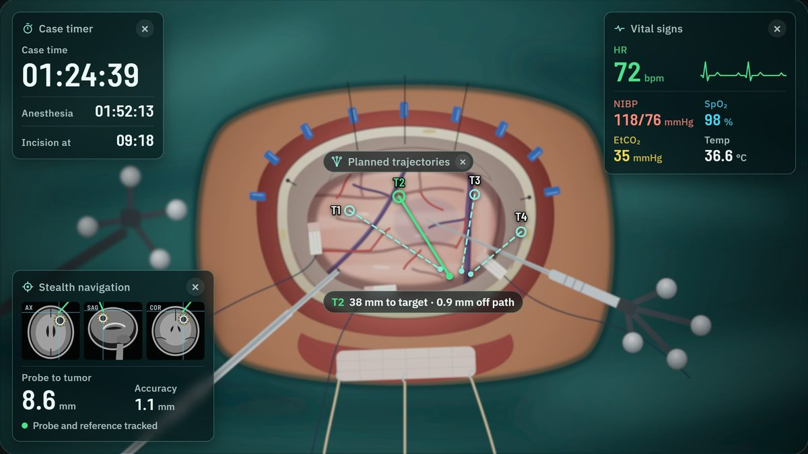
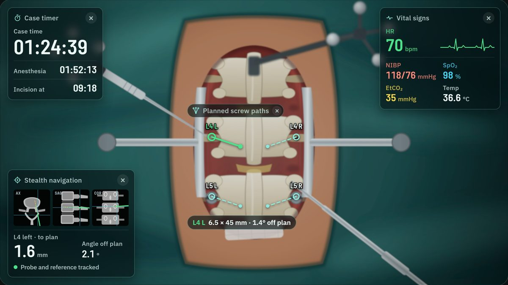

AR glasses for cranial and spine surgery · surgeon survey
What would you want to see in your glasses during surgery?
Pick the surgery you mainly do. Each has two short parts, and you can do one or both. If you do both cranial and spine surgery, you’re welcome to do both.

Cranial
Craniotomy for a brain tumor

Spine
Lumbar fusion with pedicle screws
Works on a phone, tablet or computer; a tablet or computer gives the best view. We record your name, your answers and the features you place. All patient data shown is mock-up.